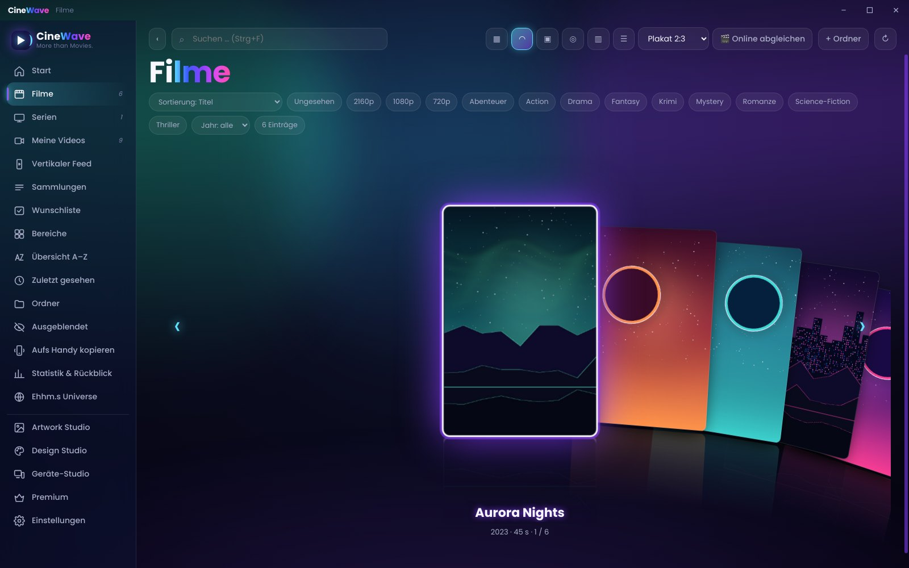

Deine Filmsammlung.
Wie im Kino.
Sechs Ansichten wie im GX Launcher: Bogen, Cover Flow, Karussell, Regal, Raster, Liste. Filter nach Ungesehen, Auflösung, Genre, Jahr. Standbilder und generierte Plakate für jedes Video ohne Cover – echte Plakate, Beschreibungen und Genres per TMDB mit eigenem Schlüssel.
Screenshots ansehen ↗